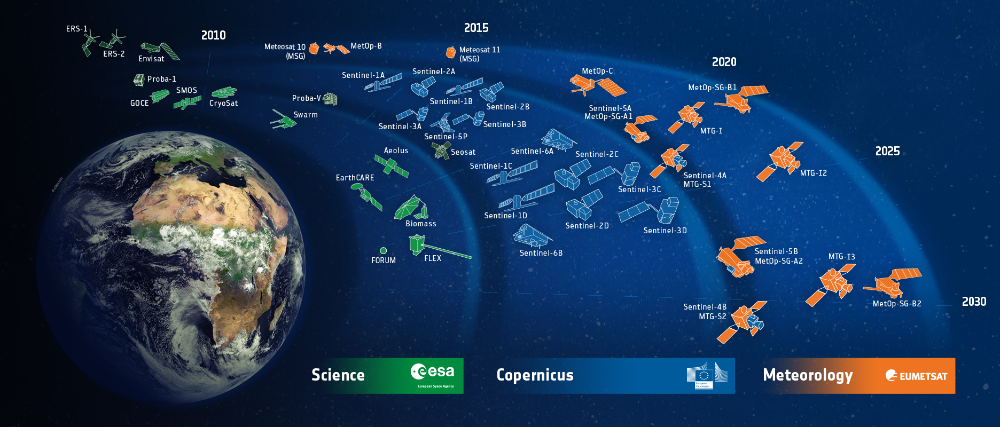

[comment]: # (This presentation was made with markdown-slides) [comment]: # (This is a CommonMark compliant comment. It will not be included in the presentation.) [comment]: # (Compile this presentation with the command below) [comment]: # (mdslides presentation.md --include media) [comment]: # (Set the theme:) [comment]: # (The list of themes is at https://revealjs.com/themes/) [comment]: # (The list of code themes is at https://highlightjs.org/) [comment]: # "You can also use quotes instead of parenthesis" [comment]: # 'Single quotes work too' [comment]: # (Pass optional settings to reveal.js:) [comment]: # (markdown: { smartypants: true }) [comment]: # (Other settings are documented at https://revealjs.com/config/) <div id="counter"></div> ### The Copernicus program : an open data initiative <small> Dimitri MARCHAND | junior ML engineer | BeCode Liege | March 16th 2023 </small> [comment]: # (A comment starting with three or more !!! marks a slide break.)
 ###### note the url! https://www.copernicus.eu

<img src="media/services.png" alt="An image" width="1800" height="600">
<iframe width="1120" height="630" src="https://www.youtube.com/embed/MGJss4lDaBo?start=66&end=120" title="YouTube video player" frameborder="0" allow="accelerometer; autoplay; clipboard-write; encrypted-media; gyroscope; picture-in-picture; web-share" allowfullscreen></iframe>
### philosophy of copernicus data - quality earth observation - open data policy - community building Note: This is a speaker note that only the presenter can see.
##### SENTINEL 2 ###### multispectral camera for segmentation
#### Natural Color (B4, B3, B2)  <small> The natural color band combination uses the red (B4), green (B3), and blue (B2) channels. </small>
#### Color Infrared (B8, B4, B3)  <small> In a color infrared image, denser vegetation is red. Urban areas are white. </small>
#### Short-Wave Infrared (B12, B8A, B4)  <small> In general, darker shades of green indicate denser vegetation. But brown is indicative of bare soil and built-up areas. </small>
#### Agriculture (B11, B8, B2)  <small> The agriculture band combination uses SWIR-1 (B11), near-infrared (B8), and blue (B2). Dense vegetation that appears as dark green. </small>
#### Geology (B12, B11, B2)  <small> The geology band combination is a neat application for finding geological features. </small>
#### Bathymetric (B4, B3, B1)  <small> Using the coastal aerosol band is good for estimating suspended sediment in the water. </small>
#### Vegetation Index (B8-B4)/(B8+B4)  <small> The moisture index is ideal for finding water stress in plants </small>
###### SENTINEL 3: radar waves for terrain deformation <iframe width="1280" height="720" src="https://www.youtube.com/embed/SLMWzQQv90s?start=184&end=209"" title="A technique to track Earth’s subtle movements with orbiting radars is heating up" frameborder="0" allow="accelerometer; autoplay; clipboard-write; encrypted-media; gyroscope; picture-in-picture; web-share" allowfullscreen></iframe>
#### data exloration and ML: wekeo.eu
#### data exploration tutorials
#### best start: futurelearn.com mooc ###
#### available projects - land cover classification - ships tracking - marine chlorophyll detection - methane emission retrieval - flood extent segmentation
#### thank you for your attention My profile: <a href="https://www.linkedin.com/in/dimitri-marchand-978b0721/"> <img src="media/LinkedIn-logo.jpg" alt="LinkedIn" width="50" height="50"> Dimitri Marchand </a> <a href="https://www.linkedin.com/in/benjamin-beaumont-42499141/"> <img src="media/LinkedIn-logo.jpg" alt="LinkedIn" width="50" height="50"> Benjamin Beaumont, ISSEP </a>